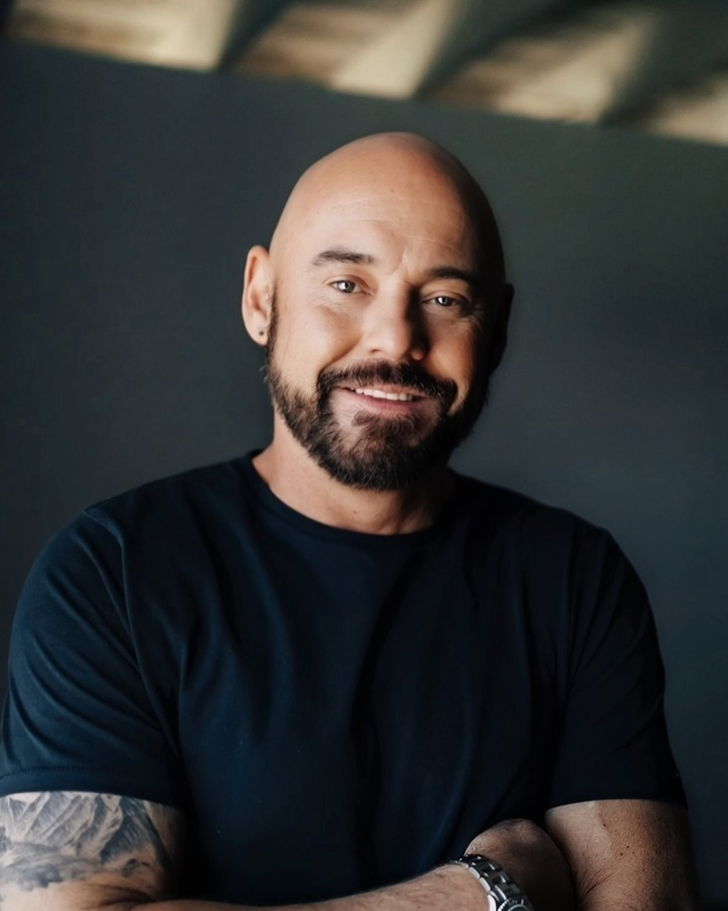

Shawn Feurer
Shawn created The Inner Blueprint after two decades in the building trades and a personal collapse that forced him to remodel his own mind first. He coached business owners across North America, studied under Bob Proctor, and turned that rebuild into a method others can follow.